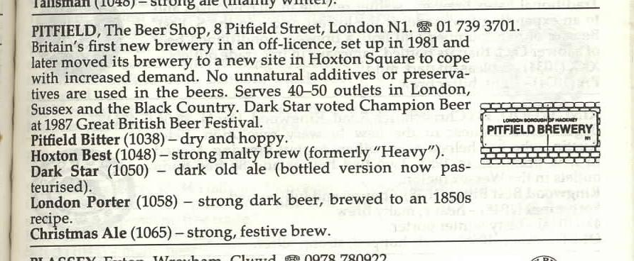

Dark star crashes
pouring its light
into ashes
Reason tatters
the forces tear loose
from the axis
Searchlight casting
for faults in the
clouds of delusion
shall we go,
you and I
While we can?
Through
the transitive nightfall
of diamonds
Mirror shatters
in formless reflections
of matter
Glass hand dissolving
to ice petal flowers
revolving
Lady in velvet
recedes
in the nights of goodbye
Shall we go,
you and I
While we can?
Through
the transitive nightfall
of diamonds
spinning a set the stars through which the tattered tales of axis roll about the waxen wind of never set to motion in the unbecoming round about the reason hardly matters nor the wise through which the stars were set in spin
First recorded as a single, available on What a Long
Strange Trip it's Been.
Recorded on
Covers:
Not exactly a cover, not exactly a recording by the Dead, are John Oswald's Grayfolded CD's. Here's a review of them by Rob Meador:
Here's the lowdown on Grayfolded:John Oswald has been experimenting with a process he calls 'plunderphonics' for some years now. He takes music, and plays with it by transforming the various elements-- slowing things down, speeding them up, layering strange things on top of one another, etc. His several CDs (never for sale and skirting the edge of liable) have been avidly collected by people like Gans, who turned Lesh onto it. In Oswald's own words-- "Plunderphonics is the taking of familiar music and making it strage, or, in another word, new."
Lesh and Gans convinced the rest of the band to let Oswald into the vaults to plunderphonicize the Dead (then they convinced Oswald to do it-- he was reluctant at first). At first, he wanted to work with Dark Star and The Other One, but as the project went on, he realized that Dark Star was a handful, and he concentrated on that. Oswald again: "As I mentioned earlier, plunderphonics usually entails taking what seems to be normal music and making it strange. But with Dark Star, since it often is strange to begin with, the task is inevitably different. Because I've so often heard that the experience of a Dead concert has never been translated to record in a satisfying way, I decided to attempt to make that translation."
He took digital copies of about 51 Dark Stars from 1968 to 1992 (including an acoustic version!), and used them as his material. Two CDs are the result-- one 59 minutes, the other 46 minutes long. In his own words again: "With Dark Star I felt like orchestrating the Dead-- having multiple verions of the band superimposed in vertical layers, so you'd have the Grateful Dead Orchestra for the nebulous sections of the song, which would be interspersed with smaller ensembles." (The above facts and quotes taken from the CD booklet)
The result of all this is stunning. You have multiple Jerry's, sometimes playing at the same time, and sometimes in the same lead. For example, you might hear a line start with what is obviously a 1969 Jerry, and end with an obvious 1989 Jerry. The same with the rest of the band. He really captures the nuances of Dark Stars in general, and there are wondrous, surprising, and very funny things going on. I love Dark Star, and I was leery lest this be awful, but it's not. It really holds the spirit of Dark Star, and is a wonderful testament to the originality and depth of the Dead's music through the years. Highly recommended!
Here is his address if you can't find the CD:
John Oswald, c/o Mystery Lab,
Box 727, Station P,
Toronto, Canada M5S 2Z1.Cheers!
Rob [Meador]
"Dark Star" was included by Jim Henke, chief curator for the Rock and Roll Hall of Fame, on the list of the 500 most influential songs in rock and roll.
For a good article on the song, and his adventures in seeking it out, read John Dwork's "Flashback! Dark Star" in Dupree's Diamond News, Vol. 3, #3 (14th issue), p. 25-27.
Perhaps the best essay to date on the song is found in the liner notes to Grayfolded, by Rob Bowman. The essay is partially reprinted in issue no. 32 (Fall 1995) of Dupree's Diamond News (pp. 32-35).
In Garcia, Charles Reich
questions Garcia about "Dark Star.":
REICH: Well then if we wanted to talk about "Dark Star," uh, could you say anything about where it comes from?
[GARCIA]: You gotta remember that you and I are talking about two different "Dark Stars." You're talking about the "Dark Star" which you have heard formalized on a record, and I'm talking about the "Dark Star" which I have heard in each performance as a completely improvised piece over a long period of time. So I have a long continuum of "Dark Star" which range in character from each other to real different extremes. "Dark Star" has meant, while I'm playing it, almost as many things as I can sit here and imagine, so all I can do is talk about "Dark Star" as a playing experience.
REICH: Well, yeah, talk about it a little.
[GARCIA]: I can't. It talks about itself.
(pp. 84, 85.)
Rhyme and assonance are used sparingly: "crashes/ashes"; "tatters/axis/shatters/matter"; "dissolving/revolving."
The rhythm breaks into five strong beats per verse, to go with the melody; the verses contain differing numbers of syllables, but revolve around a mean of 13: 12, 13, 13, 13, 14, 13.
The "chorus" offers a transition. (See "readers comments") into the lengthy stretches of instrumental improvisation. It is broken into two melodic lines of four strong beats per line, with a grand total of 19 syllables.
Tracking down the original use of the phrase "dark star," and its subsequent meanings and usages, is a task meant only for a determined obsessive. Namely, myself.
The phrase seems to have come to the English language by way of the astronomers who spoke Middle High German, who in turn borrowed it from Latin, translating the phrase "stella obscura", used by Roman astronomers to describe a faint star. This was translated into the German of the Minnesingers, and of the medieval German astronomers, as "dunkler Stern". The astronomers, according to an article by Arthur Groos, used it in a comparable manner to the meaning of the Romans, while the Minnesingers adopted it as a literary metaphor.
He cites a song by Kurenberg, a mid-twelfth century poet:
[The "dark star" hides itself.
Astronomers today still use the phrase "dark star" to refer to
the phenomenon of a faint star, and in reference to dwarf stars.
My astronomy isn't what it might be, so any help in this region
would be appreciated. I'll cite one recent article:
This explanation from Rob Meador arrived March 7, 1995:
From robm@qm.jwiley.com
In your discussion of Dark Star, you noted that astonomers use the term
in connection with dwarf stars. I'm not an astronomer myself, but I
work for a company that creates textbooks, and I found some stuff about
dwarf stars in one of our astronomy texts-- ASTONOMY: THE EVOLVING
UNIVERSE by Michael Zeilik (John WIley & Sons, Inc., 1994).
In essence (and in one sense of dwarf), stars go through dwarf stages as
they die. Our sun, for example, "... will become a white dwarf, then a
black dwarf-- a cold corpse in space."
On the atomic level, the nucleus of an atom is surrounded with a cloud
of electrons. At high stellar temperatures, atoms are ionized and the
electrons run around free of the nuclei. As a star is crushed to higher
densities in its evolution, the electrons form a degenerate electron
gas.
In 1935, a guy named Subrahmanyan Chandrasekhar applied the physics of a
degenerate electron gas to the model of a star. He found that the
pressure exerted by the electrons could resist the force of gravity only
for stars of less than 1.4 solar masses and that such stars would have a
particular density. Such stars are known as white dwarfs. This guy
also found the crucial point at which the star has the highest density
and smallest radius possible. Any more mass at all added to this point,
and the star collapses. This point is known as the Chandrasekhar limit.
So, a white dwarf is a star at the end point of its thermonuclear
history where no heavy elements are fused and no energy is produced--
the end of the line of energy production. Slowly, the stored interal
heat of a white dwarf then radiates into space (pouring its light into
ashes, as it were). Eventually, it becomes a black dwarf, cold and
energyless and non-productive.
Another kind of dwarf is the brown dwarf. The brown dwarf is a
protostar that never achieves enough mass to become an actual star. The
text I'm drawing from defines brown dwarf as: "... a very low mass
object of low luminosity that never becomes hot enough to sustain
thermonuclear reactions."
So, a white dwarf is a dying star, at the point at which it no longer
produces energy. A brown dwarf never gets to be a star. In either
case, the image is of barreness, death, and stagnation-- and we all
better go while we can!
One final note: when a massive star dies in a supernova, the blast can
spew newly synthesized elements into interstellar space. "Supernova
explosions, remnants, and pulsars may be the sources of cosmic rays."
Or as Walt Whitman would have it, "I believe a leaf of grass is no less
than the journey-work of the stars."
A tip o' the hat,
Rob
And this from Barbara Ortagus:
David, this is terrific work you're doing. Regarding "Dark Star", it brings to mind
(at least, my mind) something I read in John Gribbin and Martin Rees' book Cosmic Coincidences,
Dark Matter, Mankind and Anthropic Cosmology (Bantam, 1989):
(Gribbin also did In Search of Schrodinger's Cat which to my mind
(and most probably no-one else's) relates to the Cheshire Cat because it is
and it isn't (but isn't everything?))
BTW, when you said have you ever wondered what would happen if you stopped
to investigate everything you didn't know about (or something to that effect),
that's what I've been doing for about 50 years and boy am I ever lost!
Anyway, I sure enjoy your work and the postings of others.
And this from Eric Elliott:
Greetings.
I have a bit of information to add to the astronomical ideas associated with
"Dark Star." I agree with Rob Meador that Hunter's lyrics could suggest the
collapse of star into a white dwarf - "Dark Star crashes, pouring its light
into ashes," but I've always thought the song is more likely referring to a
pulsar. I'm not, by any stretch of the imagination, an expert on stellar
evolution, but here's the basic definition of a pulsar: When a very massive
star goes supernova, the collapsing core becomes a neutron star- an
ultra-dense object, part way between a white dwarf and a black hole. A pulsar
is type of neutron star that, because of its rapid spin, and ejection of
radiation, causes an observer to see a intermittent pulse of light (or more
likely, radio waves). A frequently used analogy is that of a lighthouse.
Pulsars are often found in the center of a massive nebula "cloud," the result
of the original supernova. (An example is the pulsar within the Crab Nebula.)
"Searchlight casting for faults in the clouds of delusion" is an apt
description. Also, it's important to note that the radiation being emitted by
a pulsar is being ejected from its magnetic poles. Hunter's lyrics, "...the
forces tear loose from the axis" (or Garcia's "...the forces stem from the
axis,") seem significant in this context.
I believe that theories about pulsars were first being developed in the mid
to late 1960's, and pulsars were probably a pretty hot topic in some circles.
Larry Niven's short-story "Neutron Star" (written during that time period) is
a fascinating monologue on what it might be like to explore up close this
type of stellar object.
- Eric Elliott
Another comment:
Hi, I was just going to throw my .02 in on the matter of Dark Star.
Imagine if you will a mirrored sphere in space. If it isn't too close to
any light source then all light that reaches it could be treated as a
point source. This means that it wouldn't show up as anything, it would
just blend in mirroring the surrounding space. Just a thought.
Any number of books and songs have used the phrase, and it is now
impossible to tell who influenced whom, and is it important,
anyway? I find it interesting to see how often the phrase has
been used, so I offer the following, doubtless far from complete,
list:
Books, films, and songs using "Dark Star" in their titles:
A line in J.R.R. Tolkien's poem, "Cat", refers to:
And this comment from a reader:
Add to your Dark Star data: 1953 Kentucky Derby winner.
Hmmm.... the year I was born.
Another comment from a reader:

(Note: this poem is also
echoed in "Stella Blue".)
Hey David,
It's me again, after checking out "Dark Star." My idea was that
the song actually talks about itself; the "transitive nightfall
of diamonds" being the ensuing jam, or to put it the other way
'round, the jam does its best to define the "transitive
nightfall of diamonds" every time the song is played, differently
every time.... This would make "Shall we go..." Jerry's (or the
implied narrator's) invitation to the listener to join the band
on the ensuing musical journey.
als tuo du, frouwe schoene, so du sehest mich.
so la du diniu ougen gen an einen andern man.
son weiz doch luetzel iemen, wiez under uns zwein ist getan.
Do likewise, beautiful lady, when you see me:
Let your eyes glance at another man,
And no one will know how things are between us."
For many years, the phrase as used by the Minnesingers was taken
to mean "Venus", the "star" obscured by cloudy vapors, and
representing Love in the age of chivalry. Groos'
article contradicts this interpretation, arguing for a much more
complex metaphor. His article ("Kurenberg's 'Dark Star', in
Speculum: a Journal of Medieval Studies, vol. 54, 1979, pp
469-78) is worth reading.
"Dark star throws light on missing mass." New
Scientist, v. 116 (Nov. 19, 1987), p. 33. The subject
tracings for the article indicate it is about Dark matter
(Astronomy) and Dwarf stars.
Date: Tue, 07 Mar 95 16:55:22 -2400
From: Rob Meador
From ortagus@gate
Date: Tue, 4 Apr 1995 11:25:11 -0700
To: ddodd@serf.uccs.edu
"There is no longer room to
doubt that dark matter holds our Galaxy, and others, together; the major issue
is, what is that dark matter?"
He goes on to describe failed galaxies. Sort of a
step on down the road from dark stars, huh?
Date: Fri, 1 Sep 1995 01:13:35 -0400
From: Fjalarh@aol.com
Subject: Dark Star
Date: Wed, 31 Jan 96 16:57:02 -0800
From: Steven Jernigan
Subject: Dark Star
Books:
Note relationship to the title "Stella Blue". Stella
is Latin for star, so,
a blue star.
"The pard dark-starred,
fleet upon feet..."
("Pard" is short for leopard, so the dark stars being referred to are the
leopard's spots.)
From jcesare@sdcoe.k12.ca.usFri Mar 31 08:10:33 1995
Date: Thu, 30 Mar 1995 22:58:42 -0800
From: Joe Cesare
To: ddodd@serf.uccs.edu
Subject: Dark Star
The faster we go, the rounder we get!
-----Original Message-----
From: Ken Johnson [mailto:ken.johnson@Seattle.Gov]
Sent: Thursday, September 11, 2003 10:58 AM
Subject: One more Dark Star ref
I think I promised this years ago, and I am sorry for it being upside down, but I scanned wrong and
my work imaging (i.e. Paint) doesn't allow me to open and rotate and save. I also was to have
scanned a review of the beer itself but I apparently screwed up the name of the scan and lost it
until I re-visit the Univ. Washington scan facilities.
This is from Michael Jackson's Best Beer Guide, circa 1990. I used it to make sure that I found a place to
sample Dark Star when I visited there in 1991. I mentioned years ago in an e-mail that the
bartendress had a shirt for the beer that I would have given the shirt off my back to get, which the brewer
had given her. Its probably on E-Bay or will be someday. The shirt, not the girl.
...
When I re-scan the review of the beer I will send that. It appears that it is not produced anymore but I think
there is a brewery in Colorado that has a beer by the name of Dark Star these days. Doubt if it could be as good,
especially without the London ambience!
Cheers,
Ken Johnson
Reason
Reason: "...in opposition to sensation, perception, feeling,
desire, as the faculty...by which fundamental truths are
intuitively apprehend." (Encyclopedia Britannica.)
axis
"Axis: 1. a straight line about which a body or a
geometric figure rotates...
5. a main line of direction, motion, growth, or extension."
(Merriam Webster Dictionary.)
Shall we go, you and I
David Womack, in his The Aesthetics
of the Dead, points up a parallel to T.S. Eliot's opening lines for
"The Love Song of J. Alfred Prufrock:"
"Let us go then, you and I,
The question becomes: who is the speaker addressing? Who is the "you" of this
line? Everyone listening to the song, perhaps?
When the evening is spread out against the sky
Like a patient etherised upon a table."
while we can?
In the sense of "get out while the gettin's good." Terrible
things seem to be occurring all around; it's definitely a spooky,
somewhat oppressive atmosphere invoked by Hunter.
transitive
"Of, relating to, or characterized by transition." (Merriam
Webster Dictionary.)
Reader Responses
From: Jurgen Fauth
To: ddodd@serf.uccs.edu
Subject: Dark Star
keywords: @star, @eliot
DeadBase code: [STAR]
First posted: February, 1995
Last revised: September 15, 2003